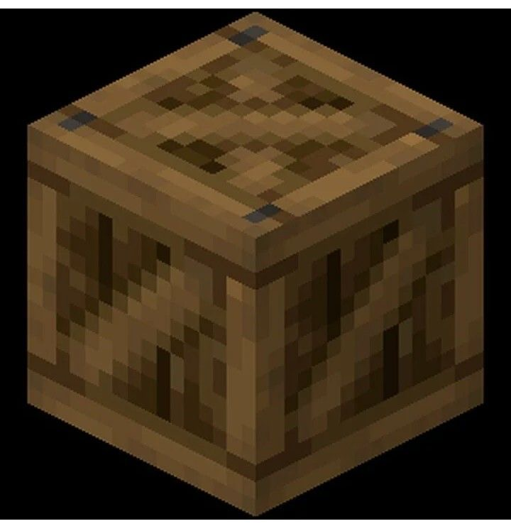

Day 6 — Week 2: Texturing & Polish
06First pixel texture — paint wood planks on the crate
Yesterday gave the set one shared palette. Today you keep that palette, but stop using only flat fills. You paint a few crisp pixel lines on the crate so its wood starts to read as planks, edges, and small scratches.
One re-textured crate render: the same model and same six-color palette, but with visible plank seams, darker edges, and a few tiny wood marks. The new skill is using the Paint Brush for deliberate pixel texture instead of only bucket fills.
Warm up — 30-second recall
Answer first, then open the cards. This keeps the Week-2 palette work available.
Why did Lesson 5 use exact HEX colors?
Which Fill Mode recolors an entire cube in one click?
What are today's two wood colors?
#C68B45 for the base and Dark Wood #7A4E24 for plank lines, edges, and scratches.The one new idea — texture is pixels, not extra cubes
A texture is the image wrapped onto your model. You already used textures when you filled parts with one color. Now you will edit individual pixels on that image. In Paint Mode, Blockbench's UV Editor can be used for painting, and the Paint Brush can paint directly on the model or in the UV Editor. Holding Shift with the Paint Brush draws a straight line. [Blockbench Wiki — Paint Mode]
Do less than you think. Three plank lines and a few corner marks beat a noisy texture. Low-poly assets need readable shapes from a distance, not tiny realism.

Do it with me
Keep the Course Palette open. If your saved palette from Lesson 5 is not loaded, import it before painting.
-
Open the crate and save a copy
Opencrate.bbmodel. Use File → Save As if you want a safe copy, e.g.crate-pixel-texture.bbmodel. The goal is texture practice, not rebuilding. -
Confirm the base wood fill
Switch to Paint mode. Pick Wood#C68B45, choose the Paint Bucket, set Fill Mode → Cube, and click the crate if it is not already the shared wood color. -
Turn on the pixel grid
Toggle the Painting Grid so you can see individual pixels. If the UV Editor is tiny, use its larger view / full view button. Bigger view, smaller brush. -
⭐ Paint three plank seams
Pick Dark Wood#7A4E24. Choose the Paint Brush, set size to 1, and paint three straight plank seams on the front face. Hold Shift while painting a line if your hand wobbles. -
Add darker corners
With the same one-pixel brush, place short dark marks near the crate's corners and bottom edge. Think "edge shadow," not outline-everything. Stop after 8-12 small marks. -
Add two tiny highlights
Optional: pick Cream#F3E6C4and add one or two one-pixel marks on the top edge. This is a stylized catchlight, not a new material. -
Orbit out and judge the read
Zoom back until the crate is small. If the plank lines still read, keep them. If the crate looks dirty or striped, undo half the marks. Good game textures survive at thumbnail size. -
Save the model and texture
Use Ctrl/Cmd S. If Blockbench shows a separate save icon for the texture, save that too. The editable model and image texture both matter. -
Render a before / after
Capture yesterday's flat crate beside today's plank-textured crate if possible. If not, one clean after shot is enough. -
Post your Day-6 itch.io post
Publish the render on itch.io and RedNote with the captions below. Streak: Day 6.
If the texture becomes messy, you probably used too many colors or too many marks. Return to only two wood colors: Wood base and Dark Wood detail.
itch.io post (English):
RedNote / 小红书 (中文):
Quick self-check
Say the answer first, then open the card.
What changed today: model shape or texture pixels?
Which tool paints one-pixel wood detail?
Why zoom out before saving?
What should you do if the crate looks noisy?
Read the official Blockbench overview section on Paint Mode tools and actions: Paint Brush, Paint Bucket, Color Picker, Painting Grid, and Shift-drawn lines.
Tomorrow we reuse the same idea on the chopping board: board grain plus a simple knife highlight. The pattern is now clear — one old prop, one small texture upgrade, one post.
If the brush paints the wrong face, the UV view is confusing, or the texture saves separately from the model, tell me exactly what you see. Bring back your Day-6 crate and I'll set up the next texture pass on the chopping board.